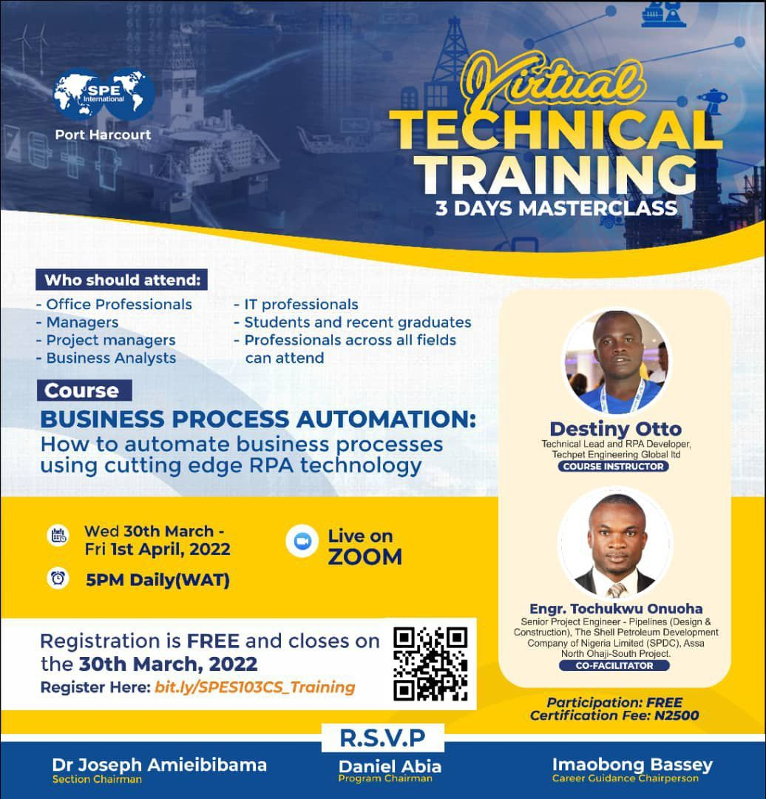
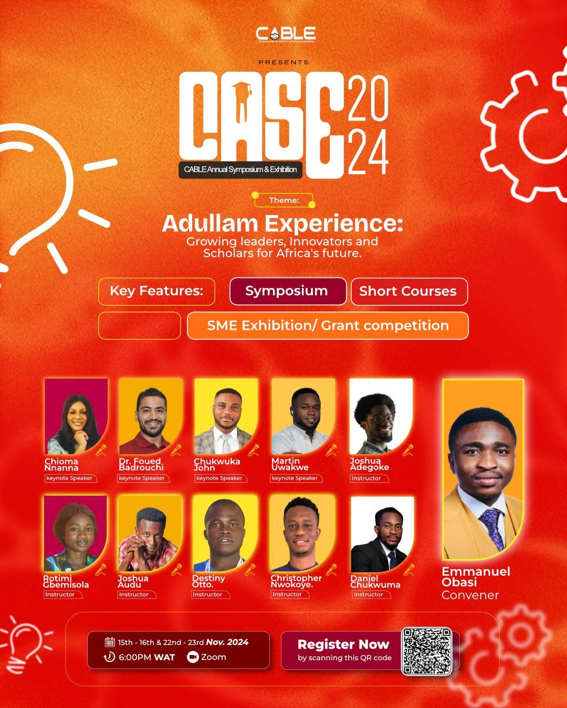
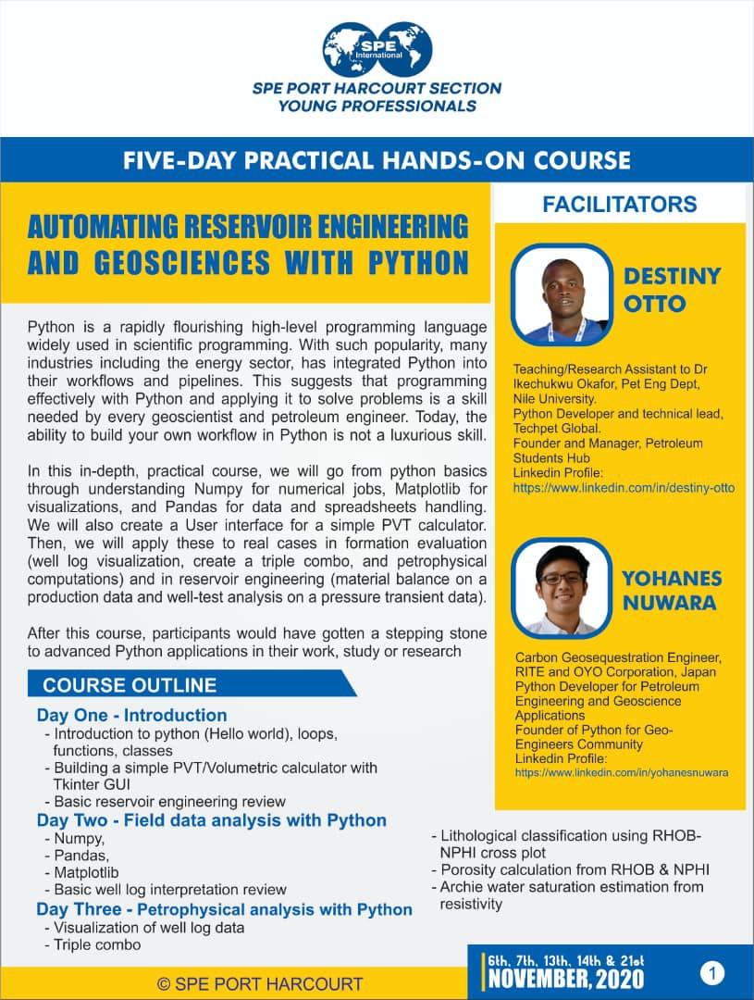
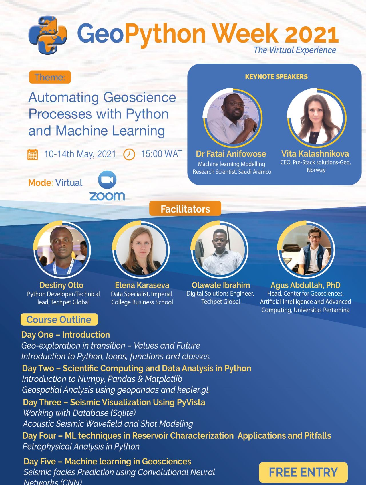
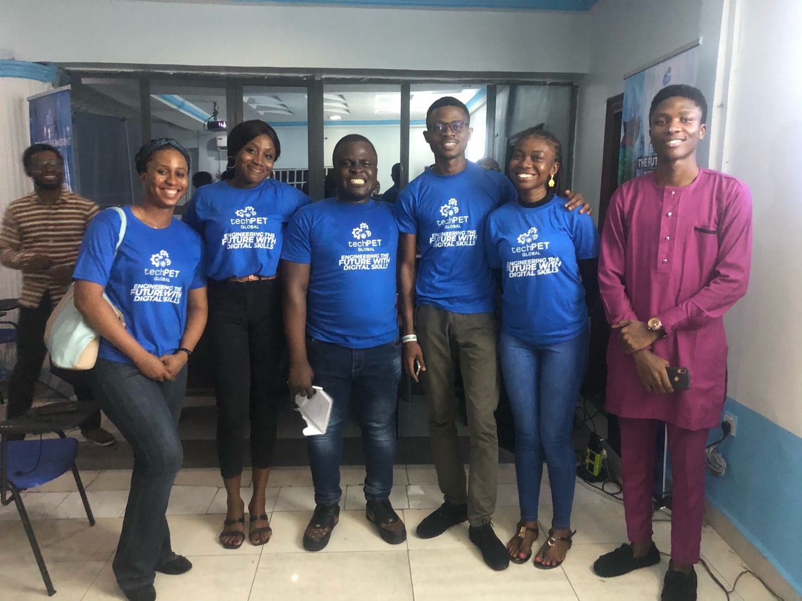

About Me
Skilled in leveraging LLMs, APIs, Python, and data analysis techniques to build intelligent systems, streamline processes, and extract actionable insights. Adept at systems thinking, identifying bottlenecks, and implementing scalable automation solutions. [3, 4]
Seeking an AI Engineer role to apply expertise in AI agent development, workflow automation, and process optimization within a dynamic, high-growth environment. [5]
Core Competencies
AI & LLMs
- OpenAI API, Gemini API
- LangChain, RAG, MCPs
- Custom AI agents
- Tokenization, Embeddings
- Vector databases (Chroma DB, FAISS)
- NER, Summarization
- Prompt engineering
- Transformers (BERT, Llama, Hugging Face)
- Computer Vision (OpenCV, Pillow)
- Google Gen-AI, Vertex AI
Automation
- Robotic Process Automation (UIPath)
- Workflow Automation (Zapier, n8n)
- No-code app integration
- Browser automation (Selenium, PyAutoGUI)
- HTML parsing, Web scraping (Beautiful Soup)
- Test automation (Pytest)
- UI testing, Schedule
Programming & Scripting
- OOP (Python, JavaScript, Matlab, VBA)
- Shell Scripting (Bash)
- Debugging, Refactoring
- Scientific Computing
- Automation Scripting
- File Manipulation, I/O
- API development & integration
- GUI Development
Cloud & DevOps
- Deployment (Heroku)
- CI/CD pipelines (GitHub Actions)
- Containerization (Docker)
- Container Orchestration (Kubernetes)
- Serverless computing (AWS Lambda, Azure Functions)
- Object Storage (AWS S3)
- Version Control (Git, GitHub)
- Cloud Security
- PaaS, Google Drive API, Vertex AI
Data Engineering
- ETL pipelines
- OCR
- Regex
- SQL, NoSQL & Relational databases (PostgreSQL)
ML & Data Science
- Linear Algebra, Statistical modelling, A/B Testing
- Data Cleaning & Preparation, Feature Engineering
- Classical ML Algorithms (Scikit-learn, XgBoost)
- Regression, Classification, Clustering
- Neural Networks (TensorFlow, Keras, PyTorch)
- Time Series Forecast (Statsmodel)
- CNN, LSTM, RNN, Transformers, GANs, VAE
- Transfer Learning
- Data Visualization (Matplotlib, Seaborn, Plotly)
- Reporting & Dashboards (PowerBI, Tableau, Spotfire, Dash, Streamlit)
- Experiment Tracking (MLFlow, Weights & Biases)
- Model Deployment
Software Development
- Frontend Development (HTML, CSS, React)
- REST API (FastAPI, Flask, Django)
- MCP (Microservices, Monoliths)
- Authorization & Authentication
- Unit tests, Integration tests
- Asynchronous development
- Caching (Redis)
- Version control, Package management
- ORM, Databases
- Logging, monitoring & error tracking
- Web sockets, Celery
Soft Skills
- Systems thinking
- Process mapping
- Documentation
- Technical leadership
- Proactive Initiative
- Technical training
- Team collaboration
- Presentation
Tech Stack
AI & LLMs:
OpenAI API, Gemini API, Chroma DB, FAISS, SpaCy, BERT, Word2Vec, NLTK, LangChain, Embeddings, Llama, Hugging Face, Google Gen-AI, Vertex AI.
Automation Platforms:
UIPath, Zapier, n8n, Selenium, Beautiful Soup, Pytest, Schedule, PyAutoGUI.
Programming:
Python, Matlab, VBA, JavaScript, SQL, Bash, Git and Github.
Web & APIs:
FastAPI, Flask, Django, RESTful APIs, Dash, HTML, CSS, React, Streamlit.
Cloud & DevOps:
AWS (Lambda, S3), Azure Functions, Docker, CI/CD (GitHub Actions), Google Drive API, Vertex AI, Kubernetes, Heroku.
Data & ML:
Numpy, Pandas, Scikit-learn, Scipy, Statsmodel, XgBoost, Matplotlib, Seaborn, Plotly, TensorFlow, Keras, PyTorch, PowerBI, Tableau, Spotfire, MLFlow, Weights & Biases, Jupyter Notebook, VSCode, OpenCV, Pillow, Hugging Face Transformers.
Project Mgt:
Slack, JIRA, Teams, ClickUp.
Professional Experience
Machine Learning Engineer (Contract)
RightClick Solutions | Abuja, Nigeria
Aug 2024 - May 2025
Spearheaded PetrodocAI development for NNPC/Antan Producing Limited, processing 22,000+ files. Engineered ingestion/classification pipeline (LangChain, RAG, Gemini 2.0). Implemented OCR (Google Cloud Vision API) and report summarization (OpenAI, Gemini 2.0), reducing review time by 95%. Developed Technical File Parser for 15+ formats. Designed NNPC/Antan Smart Data Management System. Automated file transfer (22,000+ files, SharePoint to AWS S3). [14, 15, 16, 17, 18, 19, 20, 21]
Systems Analyst (Contract)
Heritage Energy Operational Services | Lagos, Nigeria
Feb 2022 - Jul 2022
Developed AWWCS (AI/ML for well intervention), improving accuracy by 25%. Automated analysis of 200+ well logs. Implemented LSTM predictive analytics (90% accuracy). Designed Power BI dashboards for 200+ wells. Set up real-time data pipeline (SharePoint to Power BI). Automated Excel workflow, reducing 10-day task to 4 hours. [22, 23, 24, 25, 26, 27, 28]
Technical Consultant (Data & AI)
Edvantage Global | India (Remote)
Jul 2022 - Dec 2024
Developed and delivered training on data analytics (Power BI, Tableau, SQL), Python, and automation for 200+ oil and gas professionals. Taught specialized courses on drilling/production analytics and ML in energy. [30, 31, 32]
Founder & Technical Lead
TechPet Global | Port Harcourt, Nigeria
Jul 2021 - Feb 2022
Founded TechPet Global and led a team of 12 in developing Appera, an AI-powered workflow orchestration platform. Implemented AI automation for data flows. Designed UI for file management and task execution. Developed Python/JS microservices reducing modeling tasks by 80%. [33, 34, 35, 36, 37]
Featured Projects
NNPC/Antan Smart Data Management System
Designed and developed from scratch a secure, scalable system for NNPC/Antan Producing Limited, managing 22,000+ technical reports. Features efficient search, navigation, embedded file viewers/previews, and automated file transfer from SharePoint to AWS S3. [19, 20]
Tech: Python, JavaScript, React, FastAPI, Django, PostgreSQL, AWS S3, Google Drive API, Celery.
PetrodocAI
Spearheaded the development of an AI-powered document processing system that automated categorization, analysis, and summarization for over 22,000 technical files (well reports, logs etc.). Leveraged advanced OCR and LLMs to extract key metadata and subsurface insights, achieving a 95% reduction in document review time. [14, 15, 16, 17, 18]
Tech: Python, JavaScript, React, FastAPI, Flask, Streamlit, Dash, LangChain, RAG, Gemini API, OpenAI API, Google Cloud Vision API, Heroku, Redis, Celery.
Automated Workover Candidate Selection (AWWCS)
Developed and deployed an AI/ML system using Python and neural networks to optimize well intervention decisions for Heritage Energy. Improved workover candidate identification accuracy by 25% over traditional methods through analysis of well performance and reservoir data. [22, 23]
Tech: Python, Neural Networks (LSTM), Scikit-learn, Pandas.
Appera
Founded TechPet Global and led a team of 12 in the end-to-end development of Appera, an AI-powered workflow orchestration platform. Designed to visualize and automate complex project pipelines, enhancing efficiency in technical workflows through streamlined data flows and simplified file management. [33, 34, 35, 36]
Tech: Python, Java, React, JavaScript, Microservices.
Side & Freelance Projects
AI-Powered Sales Forecaster
A freelance project developing a time-series forecasting model to predict product sales for a local e-commerce business, enabling better inventory management.
Tech: Python, Pandas, Scikit-learn, Prophet, Flask.
View on GitHubAutomated Customer Support Bot
Developed an NLP-based chatbot using RASA to handle common customer inquiries for a startup, reducing response times and improving user satisfaction.
Tech: Python, RASA, NLTK, Docker.
View on GitHubImage Style Transfer App
A personal project exploring Generative Adversarial Networks (GANs) to create an application that transfers artistic styles to user-uploaded images.
Tech: Python, TensorFlow, Keras, Streamlit, OpenCV.
View on GitHubPersonal Document Organizer
A tool to automatically categorize and tag personal documents based on content using NLP techniques and pre-trained models.
Tech: Python, SpaCy, Scikit-learn, FastAPI.
View on GitHubSmart Home Automation Hub
An ongoing project to integrate various smart home devices into a centralized control system using Raspberry Pi and Home Assistant.
Tech: Python, MQTT, Home Assistant, Raspberry Pi.
View on GitHubSpeaking Engagements & Media

Panelist at "AI in Africa Summit 2024"
View on LinkedIn
Keynote: "Future of Automation in Energy"
View on LinkedIn
Workshop: "LLMs for Developers"
View on LinkedIn
Tech Talk: "Building Scalable AI Solutions"
View on LinkedIn
Podcast Guest: "Innovations in Data Science"
View on LinkedInEducation
B.Eng. in Petroleum Engineering
University of Port Harcourt, Nigeria | Jan 2023 [41]
Courses & Bootcamps
- Applied Data Science Lab (WorldQuant University)
- AWS Machine Learning Fundamentals (Udacity)
- Engineering Project Management (Coursera)
- Full Stack Developer Nanodegree (Udacity)
- Robotic Process Automation (Udemy)
- Data Scientist Nanodegree (Udacity)
- Machine Learning Engineer Nanodegree (Udacity)
- Applied DeepLearning for Computer Vision Lab (WorldQuant University)
- Deep Learning Nanodegree Program (Udacity)
- Machine Learning DevOps Nanodegree (Udacity)
- Generative AI Nanodegree (Udacity)
- LLM Course (Hugging Face)
- Data Analyst in PowerBI (DataCamp)
Get In Touch
Let's connect and explore how we can innovate together!
+234 816 084 9125
Time Zone: Flexible | Languages: English (Native)